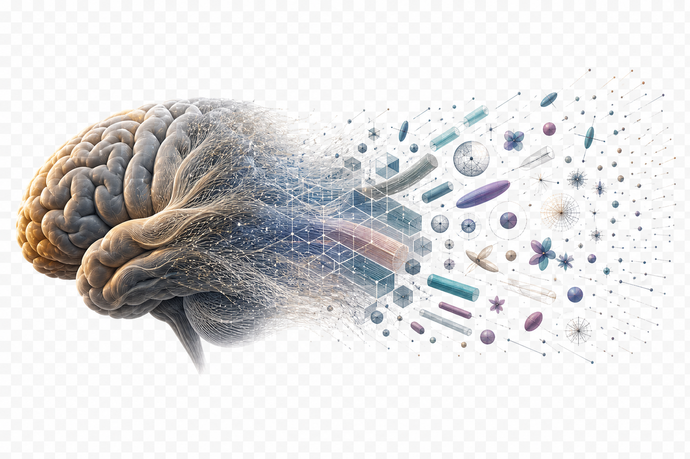

Open Science · Diffusion MRI · Microstructure Imaging
Diffusion MRI can see inside living tissue without a scalpel — inferring axon diameters, membrane densities, soma permeability from the motion of water molecules. dmrai-lab is building the infrastructure this field deserves: open, validated, reproducible, from simulation to compendium.

Packages
Vision
The goal is not a faster fitting tool — it is the living compendium of everything diffusion microstructure imaging knows.
dmrai-lab is the revival and extension of dmipy, originally published in
Frontiers in Neuroinformatics (2019). We are rebuilding it from the ground up:
a JAX fitting engine grounded in biophysical compartment models, a Monte Carlo
simulator for ground-truth validation, an acquisition design tool that closes
the loop between measurement and claim, and a compendium that makes every
validated protocol and result machine-readable and citable.
Our north star: a scientist anywhere in the world should be able to describe a
tissue model, find the canonical validated protocol for it, simulate it, fit it,
and reproduce the result — in a single afternoon.
The bottleneck was never intelligence. It was infrastructure.
Diffusion MRI can see inside living tissue without a scalpel. It can infer the diameter of an axon, the density of cell membranes, the permeability of a soma wall — all from the way water molecules move. This is one of the most remarkable capabilities in modern medicine.
And the field has been working without the infrastructure it deserves.
Not for lack of trying. The scientists who built this field are rigorous, inventive, and deeply committed to getting it right. Validation has happened — but bespoke, each group building its own simulation, its own ground truth, its own interpretation of what the model should recover. Brilliant work, done in isolation, with tools that were difficult to build and harder to share. The supporting code is often unpublished, the methodology unreproducible not by choice but by circumstance. What survives in the literature is the claim. What does not survive is the chain of evidence behind it.
The result is a field where the same model can be validated six times in six different ways, with six different simulators, producing six subtly different answers — and no shared language to reconcile them. Where scope boundaries exist in the author's intuition but not in the publication. Where a protocol validated for one tissue type migrates quietly into another without anyone having established whether it should.
This is not a failure of the people. It is a failure of infrastructure. And infrastructure is exactly what has become possible to build.
Physics governs water diffusion in biological tissue completely and without ambiguity. The Bloch-Torrey equation is not a hypothesis. Brownian motion in restricted geometries is not a conjecture. These are the specification. Everything else — every model, every protocol, every clinical claim — is an implementation that either satisfies the specification or does not.
Monte Carlo simulation is the compiler. Given a substrate geometry, a permeability, a relaxation time, and an acquisition waveform, simulation produces ground truth signal with no approximation beyond the physical assumptions themselves. It does not negotiate with analytical convenience. It does not care about publication deadlines.
A claim that cannot survive Monte Carlo validation within its stated scope is not a validated claim. It is a hypothesis.
dmipy implements three nodes of one closed loop: simulation — Monte Carlo substrate generation and signal synthesis, grounded in biologically cited parameter distributions; fitting — JAX-native model inference with explicit scope boundaries and bias characterization against ground truth; and design — acquisition waveform optimization that incorporates both analytical sensitivity and Monte Carlo-derived bias simultaneously, closing the loop between what we can measure and what we claim to measure.
This is not three tools. It is one pipeline. The same substrate that generates training data also validates the model that fits it and constrains the waveform that acquires it.
Every validated result produced by this pipeline becomes a node in a public, machine-readable knowledge graph. Each node carries its physical assumptions, its scope boundaries, its Monte Carlo evidence, and its dependency on every node above it in the chain. A reader can trace any claim backward to the physics that supports it — or discover that no such chain exists.
This is not a database. It is a formal epistemological framework. The first one this field has had.
A single researcher with the right stack can now implement, simulate, validate, and publish results that previously required a laboratory, a cluster, and a team. The bottleneck was never intelligence. It was infrastructure.
dmrai-lab is one researcher and a physics engine. The physics does not care about affiliation. We are building in the open. The code is public. The compendium is public. The validation pipeline is reproducible by anyone with a GPU and a pip install.
If your model survives the compiler, it survives. If it does not, the compiler tells you exactly why, and you can fix it. That is how software has worked for fifty years. It is time for science to catch up.
Collaborators